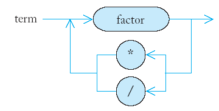

Рекурсия
План:
Триъгълни числа
Пермутации
Ефективност на рекурсията
Непряка (взаимна) рекурсия
** Триъгълни числа
- Пример: Триъгълни числа.
- Ще разгледаме триъгълна форма:
[]
[][]
[][][]
- n-тото триъгълно число е лицето
на триъгълник с ширина
(или височена) n,
като предполагаме, че всяко [] има
лице 1.
- От картинката - третото триъгълно число е 6.
- Интерфейс на клас:
class Triangle {
public:
Triangle(int w);
int get_area() const;
private:
int width;
};
Triangle::Triangle(int w)
{ width = w; }
- Ако ширината на триъгълника е 1, тогава той
има лице 1.
[]
int Triangle::get_area()
{ if (width == 1) return 1;
. . .
}
- За решаване на общия случай, разглеждаме тази
картинка:
[]
[][]
[][][]
[][][][]
- Представяме лицето на
по-големия триъгълник като:
smaller_area + width
- За да намерим по-малкото лице, конструираме
по-малък триъгълник!
int Triangle::get_area()
{ if (width == 1) return 1;
Triangle smaller_triangle(width - 1);
int smaller_area = smaller_triangle.get_area();
return smaller_area + width;
}
- Как се пресмята лицено на триъгълник с ширина
4:
- Функцията get_area прави по-малък
триъгълник с ширина 3.
- Тя вика get_area за този триъгълник.
- Тази
функция прави по-малък триъгълник с ширина 2.
- Тя вика get_area за
този триъгълник.
- Тази функция прави по-малък
триъгълник с ширина 1.
- Тя вика get_area за този
триъгълник.
- Тази
функция връща 1 (за триъгълника с ширина 1).
- Функцията
връща smaller_area
+ width =
1 + 2 = 3.
- Функцията
връща smaller_area
+ width =
3 + 3 = 6.
- Функцията
връща smaller_area
+ width =
6 + 4 = 10.
- Техниката на изразяване на решение на дадена
задача чрез решение за по-малка версия на същата
задача се нарича рекурсия.
- Системния стек - различни копия на рекурсивната функция.
- Има две основни изисквания, за да бъде
рекурсията успешна (крайна!):
- Всяко рекурсивно повикване трябва да
опрости изчислението по някакъв начин.
- Трябва да има специален случай, където да
се извършат пряко най-простите изчисления.
- get_area извиква сама себе си отново с
по-малки и по-малки широчини, достигайки в накрая широчина 1.
// triangle.cpp
#include <iostream>
using namespace std
/**
A class that describes triangle shapes like this:
[]
[][]
[][][]
. . .
*/
class Triangle {
public:
Triangle(int w);
int get_area() const;
private:
int width;
};
/**
Constructs a triangle with a given width.
@param w the width of the triangle base
*/
Triangle::Triangle(int w)
{ width = w; }
/**
Computes the area of the triangle shape.
@return the area
*/
int Triangle::get_area() const
{ if (width == 1) return 1;
Triangle smaller_triangle(width - 1);
int smaller_area = smaller_triangle.get_area();
return smaller_area + width;
}
int main()
{ Triangle t(4);
cout << "Area: " << t.get_area() << endl;
return 0;
}
- Какво се случва,
когато се пресмята лицето на триъгълник с широчина -1? Бъдете
внимателни!
- Безкрайна рекурсия
- препълване на системния стек!
- Рекурсия наистина не е наистина необходима, за
да се реши тази задача. Това може да бъде направено с помощта
на:
- прост цикъл:
double area = 0;
for (int i = 1; i <= width; i++) area = area + 1;
- формула:
width * (width + 1) / 2
** Пермутации
- Пример: Функция, която връща броя на
всички пермутации на даден низ.
- Пермутация е просто пренареждане на буквите на
низа, например за низа "eat":
"eat"
"eta"
"aet"
"ate"
"tea"
"tae"
- Ако низът има n букви, то броят
на пермутациите се получава с функцията факториел:
n! = 1 x 2 x 3 x . . . x n (x означава умножение)
- За да се пресментне стойността на функцията n! може да
се използва цикъл, но има и рекурентна формула:
n! = (n - 1)! x n
- Обичайно се дефинира:
1! = 1
0! = 1
- Рекурсивна функция за
пресмятане на факториел:
int factorial(int n)
{ if (n == 0) return 1;
int smaller_factorial = factorial(n - 1);
int result = smaller_factorial * n;
return result;
}
- Пример: Функция, която генерира всички
пермутации на една дума.
vector<string> generate_permutations(string word);
- Следният код ще отпечати всички пермутации на
низа "eat":
vector<string> v = generate_permutations("eat");
for(int i = 0; i < v.size(); i++)
cout << v[i] << "\n";
- За генериране на всички пермутации рекурсивно
генерираме пермутациите, които започват с буквата 'e',
тези, които започват на 'a' и след това тези,
които започват 't'.
- Използваме рекурсия за генериране на всички
пермутации на по-кратки (двубуквени) низове.
- "at" "ta"
- "et" "te"
- "ae" "ea"
- Добавяме първите букви за да намерим всички
трибуквени пермутации.
- "eat" "eta"
- "aet" "ate"
- "tae" "tea"
- За да реализираме идеите в предишния пример
(рекурсия), правим един цикъл, които създава по-кратка дума,
като пропуска текущата позиция.
vector<string> generate_permutations(string word)
{ vector<string> result;
...
for (int i = 0; i < word.length(); i++)
{ string shorter_word = word.substr(0, i)
+ word.substr(i + 1, word.length() - i - 1);
...
}
return result;
}
- Следваща стъпка е да се намерят пермутациите
на по-кратката дума.
vector<string> shorter_permutations
= generate_permutations(shorter_word);
- За всяка от късите пермутации, добавяме
пропуснатата буква.
for(int j = 0; j < shorter_permutations.size(); j++)
{ string longer_word = word[i] + shorter_permutations[j];
result.push_back(longer_word);
}
- Трябва да добавим край на рекурсията, т.е.
специалния случай на дума с дължина 1.
if (word.length() == 1)
{ result.push_back(word);
return result;
}
//
permute.cpp
#include <iostream>
#include <string>
#include <vector>
using namespace std;
/**
Computes n!
@param n a nonnegative integer
@return n! = 1 * 2 * 3 * . . . * n
*/
int factorial(int n)
{ if (n == 0) return 1;
int smaller_factorial = factorial(n - 1);
int result = smaller_factoria * n;
return result;
}
/**
Generates all permutations of the characters in a string
@param word a string
@return a vector that is filled with all permutations
of the word
*/
vector<string> generate_permutations(string word)
{ vector<string> result;
if (word.length() == 1)
{ result.push_back(word);
return result;
}
for (int i = 0; i < word.length(); i++)
{ string shorter_word = word.substr(0, i)
+ word.substr(i + 1, word.length() - i - 1);
vector<string> shorter_permutations
= generate_permutations(shorter_word);
for (int j = 0; j < shorter_permutations.size(); j++)
{ string longer_word = word[i] + shorter_permutations[j];
result.push_back(longer_word);
}
}
return result;
}
int main()
{ cout << "Enter a string: ";
string input;
getline(cin, input);
cout << "There are " << factorial(input.length())
<< "permutations.\n";
vector<string> v = generate_permutations(input);
for (int i = 0; i < v.size(); i++)
cout << v[i] << endl;
return 0;
}
recursive dancing
** Ефективност на рекурсията
- Въпреки че рекурсията е мощен метод за сложни
алгоритми, тя може да доведе до програми, които работят лошо
(бавно, неефективно).
- Ще анализираме въпроса кога рекурсията е
полезна (ефективна) и кога е неефективна.
- Пример: Редица
на Фибоначи се
дефинира по следния начин:
- f1 = 1
- f2 = 1
- fn = fn-1 + fn-2
- Първите 10 члена на тази редица са:
1, 1, 2, 3, 5, 8, 13, 21, 34, 55, . . .
- Точно по дефиницията се пише рекурсивна
функция, пресмятаща n-тото
число на Фибоначи.
int fib(int n)
{ if (n <= 2) return 1;
else return fib(n - 1) + fib(n - 2);
}
- Тази функция работи вярно, но за не много
големи n работи доста
(изключително) бавно.
- Ще изпълним програмата (fibtest.cpp) с n между 30 и 50 за
да видим ефекта.
- За откриване на проблема ще вмъкнем трасиращ
печат във функцията:
int fib(int n)
{ cout << "Entering fib: n = " << n << "\n";
int f;
if (n <= 2) f = 1;
else f = fib(n - 1) + fib(n - 2);
cout << "Exiting fib: n = " << n
<< " return value = " << f << "\n";
return f;
}
- Резултатът от изпълнението (fibtrace.cpp) показва защо изчисленията отнемат
толкова време.
Entering fib: n = 6
Entering fib: n = 5
Entering fib: n = 4
Entering fib: n = 3
Entering fib: n = 2
Exiting fib: n = 2 return value = 1
Entering fib: n = 1
Exiting fib: n = 1 return value = 1
Exiting fib: n = 3 return value = 2
Entering fib: n = 2
Exiting fib: n = 2 return value = 1
Exiting fib: n = 4 return value = 3
Entering fib: n = 3
Entering fib: n = 2
Exiting fib: n = 2 return value = 1
Entering fib: n = 1
Exiting fib: n = 1 return value = 1
Exiting fib: n = 3 return value = 2
Exiting fib: n = 5 return value = 5
Entering fib: n = 4
Entering fib: n = 3
Entering fib: n = 2
Exiting fib: n = 2 return value = 1
Entering fib: n = 1
Exiting fib: n = 1 return value = 1
Exiting fib: n = 3 return value = 2
Entering fib: n = 2
Exiting fib: n = 2 return value = 1
Exiting fib: n = 4 return value = 3
Exiting fib: n = 6 return value = 8
- Дърво на извикванията:

- Тъй като fib(4) се вика два пъти,
а fib(3) се вика три пъти,
то много време се губи за многократни изчисления на една и
съща стойност.
- Когато смятаме ръчно, просто събираме
последните две намерени стойности.
- Този метод може да се програмира без рекурсия
- с прост цикъл (fibloop.cpp).
int fib(int n)
{ if (n <= 2) return 1;
int fold = 1;
int fold2 = 1;
int fnew;
for (int i = 3; i <= n; i++)
{ fnew = fold + fold2;
fold2 = fold;
fold = fnew;
}
return fnew;
}
- Всяко рекурсивно решение (рекурсия) на една
задача може да се замени с итерационно решение (цикъл).
- Винаги ли итерационното решение е по-ефективно
(по-бързо) от рекурсивното?
- Често двете решения са еднакво бързи
(триъгълник, пермутации).
- Някои задачи се решават по-лесно с
рекурсия отколкото с итерация.
- Решението на задачата за генериране на
пермутации с цикъл води до
по-сложен, но не по-бърз код.
- Често рекурсивните решения са по-лесни за
разбиране и прилагане правилно, отколкото техните
съответни итерационни
аналози.
** Непряка
(взаимна) рекурсия (mutual recurson)
- Непрякя рекурсия е взаимно извикване на
няколко функции (напр. f1 вика f2 и f2 вика f1)
- Пример: Програма за пресмятане на
аритметични изрази, зададени на входа на програмата (cin).
3 + 4 * 5
(3 + 4) * 5
1 - (2 - (3 - (4 - 5)))
- За целта ще опишем правила (алгоритъм) за аритметични
действия със синтактични диаграми.
- Диаграмата дава синтаксиса на аритметичен
израз (expression).
- Израз е или термин (term) или
сума/разлика на два термина.

- Термин е или коефициент (factor),
или произведение/частно на два коефициента.

- Коефициент е или число (number) или
израз в скоби.

- Синтактичната диаграма определя приоритетите
на пресмятанията.
- Най-напред 4 и 5 ще се умножат и след това
резултатът ще се добави към 3.
3 + 4 * 5

- Тук 3 и 4 ще се съберат и резултатът ще
се умножи с 5.
(3 + 4) * 5
- За пресмятане на израз ще реализираме трите
функции: expression_value, term_value, и factor_value.
- Функцията expression_value
извиква term_value, проверява дали следващият
вход е '+' или '-', и ако е, вика
функцията term_value отново, за да добави или
извади следващия термин.
- Функцията term_value извиква factor_value
по същия начин, като умножава или дели коефицинтите.
- Функциятя factor_value
проверява дали следващият вход е '(' или цифра,
вика или expression_value рекурсивно или връща
цифрата в системния буфер.
- Завършването на рекурсията се гарантира
от expression_value, защото тази функция винаги
чете от входа и за следващото (рекурсивно) извикване и останал
по-къс вход (низ).
- Тези три функции реализират непряка рекурсия,
като са взаимно рекурсивни (mutual recurson).
- Бележки: Функцията cin.peek() чете и връща един символ без да го премахва от
системния стек (потока), cin.get() чете и връща един символ от системния стек.
Функцията isdigit() връща true, ако аргументът е цифра и false в противен случай.
// eval.cpp
#include <iostream>
using namespace std;
int term_value();
int factor_value();
/**
Evaluates the next expression found in cin
@return the value of the expression.
*/
int expression_value()
{ int result = term_value();
bool more = true;
while (more)
{ char op = cin.peek();
if (op == '+' || op == '-')
{ cin.get();
int value = term_value();
if (op == '+') result = result + value;
else result = result - value;
}
else more = false;
}
return result;
}
/**
Evaluates the next term found in cin
@return the value of the term.
*/
int term_value()
{ int result = factor_value();
bool more = true;
while (more)
{ char op = cin.peek();
if (op == '*' || op == '/')
{ cin.get();
int value = factor_value();
if (op == '*') result = result * value;
else result = result / value;
}
else more = false;
}
return result;
}
/**
Evaluates the next factor found in cin
@return the value of the factor.
*/
int factor_value()
{ int result = 0;
char c = cin.peek();
if (c == '(')
{ cin.get();
result = expression_value();
cin.get(); // read ")"
}
else // assemble number value from digits
{ while (isdigit(c))
{ result = 10 * result + c - '0';
cin.get();
c = cin.peek();
}
}
return result;
}
int main()
{ cout << "Enter an expression: ";
cout << expression_value() << endl;
return 0;
}